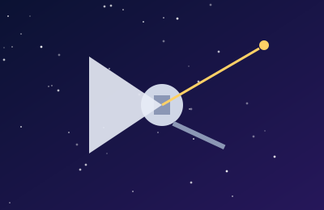
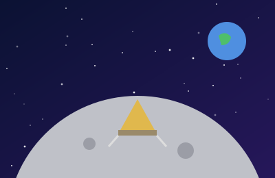
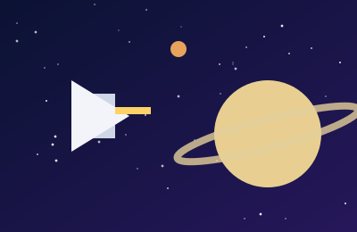
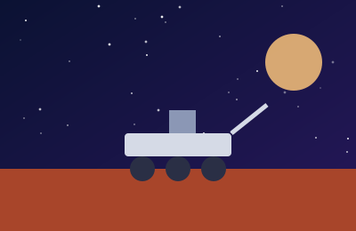
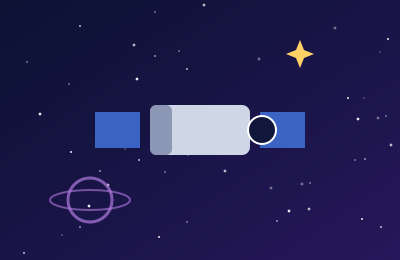
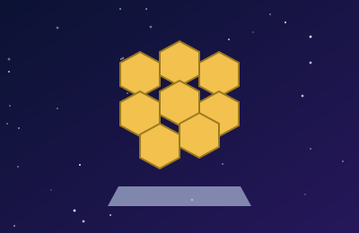

«Вояджер-1»
Найвіддаленіший рукотворний об’єкт: у 2012 році зонд перетнув межу геліосфери й вийшов у міжзоряний простір.
Шість знакових місій і телескопів, які змінили наше уявлення про Всесвіт.

Найвіддаленіший рукотворний об’єкт: у 2012 році зонд перетнув межу геліосфери й вийшов у міжзоряний простір.

Перша пілотована висадка на Місяць: 20 липня 1969 року Ніл Армстронг і Базз Олдрін ступили на його поверхню.

Місія до Сатурна: зонд «Гюйгенс» у 2005 році здійснив посадку на Титан — супутник зі щільною атмосферою.

Марсохід досліджує кратер Єзеро, збирає зразки ґрунту й випробував маленький вертоліт «Інджинуіті».

Орбітальна обсерваторія, що понад 30 років знімає далекі галактики й допомогла уточнити вік Всесвіту.

Інфрачервона обсерваторія із золотистим дзеркалом діаметром 6,5 м; шукає найперші галактики після Великого вибуху.